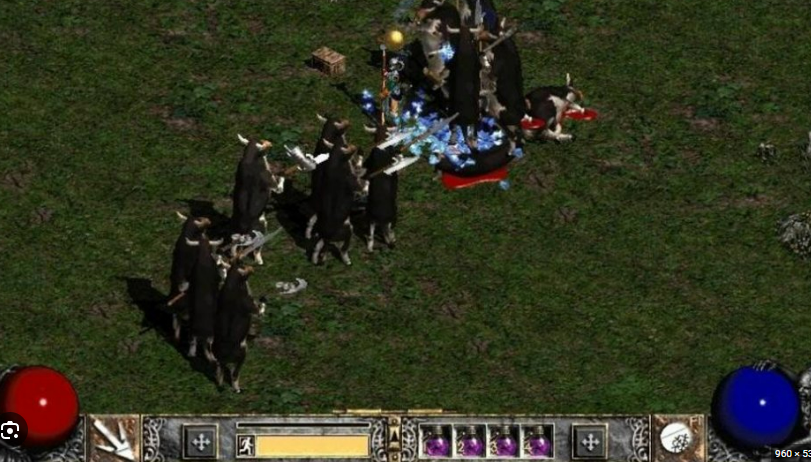

Hallo zusammen,
mich würde einfach mal interessieren, was aktuell so angesagt ist bei euch. Was zockst du so?
Welches Game fesselt dich derzeit am meisten?
LG, JD.
Satisfactory 2 - da kann man nicht aufhören und es können Stunden draufgehen.
Wenn’s schneller sein soll dann Overwatch 2, oder Battlefield V.
Wie sieht’s bei dir aus?
Aktuell sind es (immer noch) GTA5 (meist Online) und gestern beendete ich die Story von Horizon Forbidden West. Beide Spiele haben eine sehr geile Story. Horizon hat meiner Meinung nach aber zu wenig Haupt-Quests, sodass die Story sehr schnell zu Ende ist.
Würde mich über ein paar Vorschläge für ähnliche Story-Games auf der PS4 freuen!
Am 14.3.2023 um 06:46 schrieb MarioM:
Satisfactory 2 - da kann man nicht aufhören und es können Stunden draufgehen.
Wenn’s schneller sein soll dann Overwatch 2, oder Battlefield V.
Wie sieht’s bei dir aus?
Zuletzt habe ich die neuen Tomb Raider teile gespielt - waren ganz toll. Dazwischen spiel ich auch gerne mal eines der Anno Teile zum Entspannen
 .
.
Freu mich auch schon aufs neue Diablo IV.
LG JD.
vor 2 Stunden schrieb FabianMK4:
Aktuell sind es (immer noch) GTA5 (meist Online) und gestern beendete ich die Story von Horizon Forbidden West. Beide Spiele haben eine sehr geile Story. Horizon hat meiner Meinung nach aber zu wenig Haupt-Quests, sodass die Story sehr schnell zu Ende ist.
Würde mich über ein paar Vorschläge für ähnliche Story-Games auf der PS4 freuen!
Ich habe keine PS4. Gibt aber sicher genug Story Games wie Red Dead Redemption 2 :-)
LG JD.
On 28/04/2023 at 10:36 AM, Jonathan Dorian said:
Zuletzt habe ich die neuen Tomb Raider teile gespielt - waren ganz toll. Dazwischen spiel ich auch gerne mal eines der Anno Teile zum Entspannen
.
Freu mich auch schon aufs neue Diablo IV.
LG JD.
Uh Diablo, hab ich seit der Diablo II nicht mehr gespielt

Diablo2 hahaha....da kommen Erinnerungen hoch ->

LG JD.
In letzter Zeit war BlackOps6 und Warzone für Zwischendurch ganz cool, mittlerweile wegen dem Hacker-Problem aber im Multiplayer unspielbar. Daher kommen nur mehr der Zombie-Modus oder private Lobbys für Team Deathmatch o.Ä. Modi nur mit Freunden in Frage, was auf Dauer halt etwas langweilig wird.
Da es bei Fortnite ja wieder den OG Modus gibt, wo es wieder nur die Waffen und Spots (Tomato Town, Wailing Woods,...) gibt, kommt da wieder das Feeling von den Jahren um 2016 wieder hoch, als Fortnite seinen riesigen Hype erlebte und man kaum an Videos oder Clips in den Social Medias vorbeikam.
Zudem gibt's jetzt die Community-Lobbys wie zB Squid Game (in Fortnite "Octo Game" genannt) oder Horror-Spiele/EscapeRooms, wo man Rätsel lösen muss. - Ich dachte echt nicht, dass Fortnite wieder ne Option für mich als 23-Jährigen sein wird, aber es macht doch wieder irgendwie Spaß, speziell im Vergleich zu CoD, da ich bis jetzt in Fortnite keine Cheater erlebt habe. Liegt wohl daran, dass das EAC bei EpicGames im Vergleich zum Ricochet von CoD auch funktioniert.
Warte aktuell eigentlich auf den Release von GTA6 und einem etwaigen Release des 3. Teils von Horizon.
@FabianMK4
Hey,
👋
danke für deinen ausführlichen Beitrag!
😊
Ich kann absolut nachvollziehen, wie frustrierend das Hacker-Problem bei CoD sein kann. Da verliert man schnell die Lust, wenn der Multiplayer unspielbar wird. Aber hey, der Zombie-Modus und private Lobbys mit Freunden haben ja auch ihren Charme – zumindest für eine Weile. Fortnite scheint da aktuell echt eine coole Alternative für dich zu sein! Der OG-Modus hat bei vielen Nostalgie ausgelöst, und mit den Community-Lobbys wie "Octo Game" oder Escape Rooms gibt’s ja echt viel Abwechslung. Und klar, das funktionierende Anti-Cheat-System macht einen riesigen Unterschied – kein Wunder, dass du da wieder Spaß dran findest!
😄
Was GTA 6 angeht: Ich glaube, wir alle warten sehnsüchtig darauf! Und mal ehrlich, allein die Trailer könnten schon die Produktionskosten decken – Rockstar weiß einfach, wie man Hype erzeugt.
😅
Und Horizon 3? Da bin ich auch gespannt, wann es endlich soweit ist. Bis dahin wünsche ich dir viel Spaß beim Zocken und Entdecken neuer Games – vielleicht überrascht dich Fortnite ja noch mehr als gedacht!
🎮
✨
Liebe Grüße, JD.
🌻